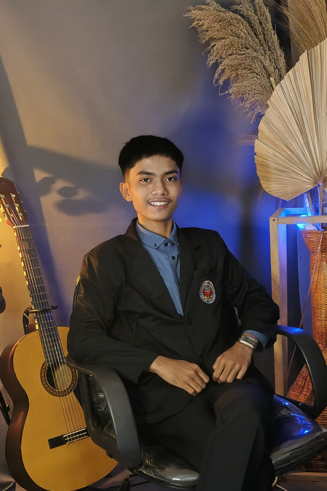
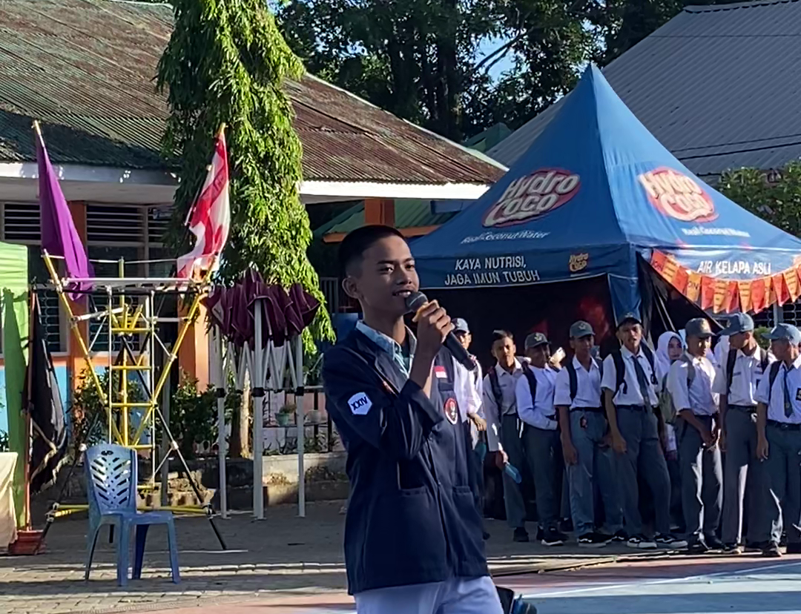

MUH. FACHRI AKBAR
Civil Engineering Student | Community Leader | Tech Enthusiast
"Empowering communities through leadership and smart technology integration."
The Natural Leader
Hello, I'm Akbar!
Saya adalah mahasiswa D4 Teknik Sipil di Politeknik Negeri Ujung Pandang yang memiliki passion besar pada pengembangan komunitas dan pemecahan masalah.
Sejak di bangku sekolah hingga di kampus, saya selalu dipercaya mengambil peran strategis—mulai dari Ketua Kelas, Ketua MPK, hingga Koordinator Divisi Pramuka tingkat Kota. Saya percaya bahwa kepemimpinan yang baik adalah tentang mendengarkan, mengoordinasikan potensi, dan menggunakan tools yang tepat untuk menciptakan dampak efisien bagi banyak orang.

Ketua Pelaksana Lomba Antar Ekstrakulikuler

Scale & Reach
Driving Impact at Scale
Bagian ini memvisualisasikan skala audiens dan jangkauan kepemimpinan saya melalui metrik kuantitatif. Berinteraksilah dengan grafik untuk melihat detail spesifik dari setiap capaian organisasi.
National Scale (>1,700)
Mengoordinasikan perwakilan Kwarcab Makassar di Peran Saka Nasional. Memastikan kesiapan administrasi dan komunikasi tim.
Organizational (60+ & 55)
Memimpin 60 pengurus MPK SMAN 7 & Steering Committee 55 panitia SMANET CUP.
Academic & Peer Leadership (23+25)
Bertanggung jawab sebagai representatif kelas sekaligus fasilitator diskusi. Mengelola komunikasi akademik mahasiswa serta menjadi pemantik materi dalam forum pengkaderan untuk meningkatkan pemahaman kolektif.
The Google Ecosystem
Tech for Real Solutions 🌟
Di sinilah visi Google menyatu dengan kepemimpinan saya. Bagian ini mendemonstrasikan bagaimana saya menerapkan ekosistem Google dan AI secara praktis untuk menyelesaikan hambatan administratif dan riset di komunitas kampus. Silakan klik tab dan langkah di bawah ini untuk melihat proses otomatisasinya.
"Bebas Kompen" Automation
"Working smarter, not harder for the community."
Mahasiswa kesulitan mengurus dokumen "Kertas Bebas Kompen" secara manual yang memakan waktu. Saya butuh sistem otomatis untuk mencetak PDF secara massal.
Membangun integrasi Forms-Sheets-Autocrat yang memangkas waktu kerja menjadi hitungan detik. Berhasil membantu puluhan rekan mahasiswa dengan efisien dan otomatis penuh.
 Ayo Coba Form Bebas Kompen ↗
Ayo Coba Form Bebas Kompen ↗
Action: Interactive Workflow


Google Forms: Digunakan sebagai portal awal input data. Teman-teman mahasiswa cukup menginputkan nama, NIM, dan detail yang diperlukan ke dalam form ini dengan cepat melalui HP mereka tanpa perlu format manual.

Prompt Optimization
Maximizing AI capabilities for data tracking and deep research.
Smart Prompt Architecture
Mengembangkan kerangka "Prompt Optimization" mandiri untuk mengubah perintah sederhana menjadi instruksi spesifik, menghasilkan output yang tajam dan terstruktur.
Lihat Gemini Meta Prompt ↗
OPTIMIZED BY GEMINI METAPROMPT ↓
Prompt Engineering
Mengembangkan metaprompt untuk menghasilkan struktur Google Sheets (ArrayFormula, VLOOKUP) otomatis.

My Metaprompt Logic:
"Bertindaklah sebagai Data Analyst. Buatkan struktur Google Sheets untuk tracking keuangan mahasiswa... Sertakan formula ArrayFormula untuk rekapitulasi."

The Voice of The Community
Mass Audience
Menjadi pembicara dan pengarah di depan >300 siswa baru..
Formal & Religious
Memandu acara keagamaan dan formal dengan audiens beragam (50 - ratusan orang), menjuarai lomba MC & Kultum.
Conflict Mediation
Mengelola dinamika dan mediasi konflik antar ekstrakurikuler saat menjadi Ketua Pelaksana lomba sekolah lintas organisasi.
Visual Evidence
Activity Gallery
Dokumentasi keterlibatan saya dalam berbagai proyek sosial, pelatihan kepemimpinan, dan kegiatan nasional.
Peran Saka Nasional
Pimpinan Kontingen Kota Makassar (Nov 2025). Mengoordinasikan perwakilan di tingkat nasional.


MPK SMAN 7 Makassar
Ketua MPK & Steering Committee SMANET CUP 2024. Mengelola birokrasi dan event besar sekolah.
Panitia KPDK Makassar
Panitia Pelaksana Kursus Pengelola Dewan Kerja (Nov 2025). Mengelola operasional pelatihan kepemimpinan.
Pondasi Teknik Sipil
Peserta aktif Pekan Orientasi dan Kaderisasi Mahasiswa Sipil PNUP (Des 2025).


Dewan Juri Kompetisi
Dewan Juri Manihot Utilissima Scout Competition (Feb 2026). Mengevaluasi peserta lomba.


Raimuna Nasional
Peserta Raimuna Nasional Jakarta (Ags 2023). Membangun relasi lintas budaya pemuda Indonesia.
Achievements
Certificate Gallery
Kumpulan penghargaan dan sertifikasi partisipasi dari berbagai kegiatan dan perlombaan.

Juara 1 Lomba MC

Raimuna Nasional

Dewan Juri LKBB

Lomba Vlog PKKMB
Lomba Vlog PKKMB
Lomba Vlog PKKMB
Lomba Vlog PKKMB
Lomba Vlog PKKMB

Why I Belong in the GSA Program?
Saya bukan sekadar pengguna teknologi; saya adalah community builder yang menggunakan teknologi untuk mempermudah hidup orang lain. Dengan rekam jejak kepemimpinan, kemampuan analisis, dan kecintaan pada ekosistem Google, saya siap memberdayakan mahasiswa kampus saya. Let's make an impact together!
Akses Dokumen Lengkap
 LinkedIn
LinkedIn
 Instagram
Instagram